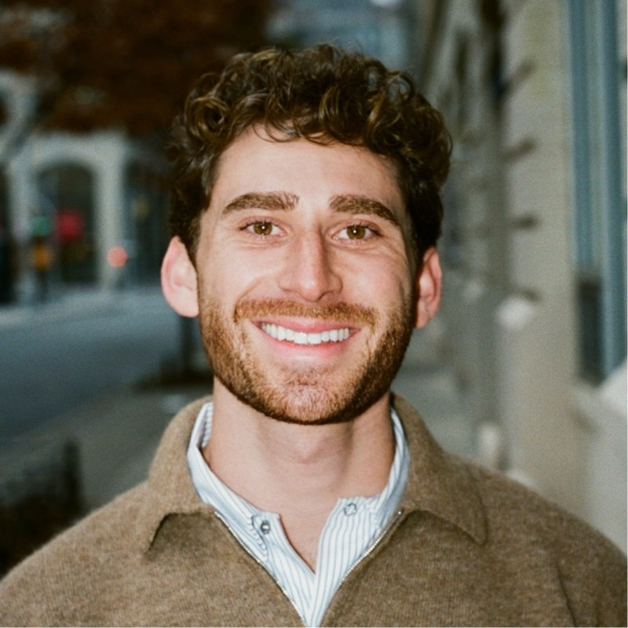

Who we are, where we came from, and the people guiding the mission.
From sober monitors at parties to the campus's go-to training program.
Cayuga's Watchers began in 2012, founded by a group of Cornell students who believed the campus's approach to high-risk drinking needed to change — and that students themselves were the ones to change it.
Our original model placed paid student trainers directly inside campus social events. At the request of the hosting organization, these trainers worked as anonymous “sober monitors” — students who stayed in touch with their friends throughout the night, looked out for them, and stepped in whenever something wasn't right.
In 2022, we shifted our approach. We found our impact was far greater when we focused on robust, in-depth training rather than staffing individual events.
Cayuga's Watchers is focused entirely on training — and we've trained every fraternity and sorority house at Cornell, along with sports teams, campus clubs, and more. Peer to peer, always.
Honest, research-backed bystander intervention training — by students, for students.
Cayuga's Watchers is a student-led 501(c)(3) nonprofit, founded to reduce the harms of high-risk drinking and promote student safety at Cornell University. We're independent of the university — and entirely free for the students and organizations we serve.
What we do is straightforward: we teach Cornell students how to be active, effective bystanders. Our curriculum is genuinely research-backed — we developed it, and continue to refine it, in collaboration with Cornell Health and university experts in bystander intervention, high-risk drinking, and sexual assault prevention. But the training itself is always created and delivered by students, for students. We help our peers recognize when something at a party or a night out is genuinely off — and build the confidence to step in.
So what does “intervention” actually look like? It's rarely the dramatic confrontation people picture. In a session, we might walk through a scenario where someone at a party is behaving in a concerning or predatory way toward another student. Stepping in doesn't mean escalating things or starting a conflict — it means using practical techniques: creating a distraction, checking in with the person who seems uncomfortable, pulling in their friends, redirecting attention, or quietly working as a group to move someone out of a bad situation. The most effective intervention is usually just friends looking out for one another.
We believe peer-to-peer training is the most effective bystander education available. Our sessions are interactive, scenario-based, and judgment-free. Because we're independent and student-run, our trainers keep it real — this isn't a lecture, it's a conversation between students who get it.
Our goal is bigger than any single party. We're working to shift the social norms around drinking at Cornell, and to become a national model for how students keep each other safe.

Drew Lord Chairman of the Board